Follow all on a jumpstart — the confirm page, its result, its mirror, and the door
Five surfaces, twenty frames. Current is main at 003f7b7;
Proposed is claude/jumpstart-follow-all at ef63001 (v2 — the Proposed frames re-captured after D6 was decided on v1: every member is a row with its own button). Both captured by
scripts/mock-snaps.mjs against the same fixtures, in the default skin, at 390×844 and 1280×900
(MOCKS.md). The population is built to stress the page: a 150-member list (the official client's cap — three
getList pages), display names long enough to wrap with emoji, handles long enough to break,
members with no display name, two already followed, one blocked, one muted, one the reader's settings hide,
and the reader herself. The repo of follow records is live in the page, so the result frame is a real
write's result, not a drawing.
Open decisions
- O3 — the buttons' words. Follow everyone in it / Unfollow everyone in it on the jumpstart page; Follow 144 people / Unfollow 2 people on the confirm pages, the number in the button. The gloss (jumpstart — what the network calls a starter pack) is said once, under the heading.
- Decided on v1 — D6, flip all or flip any (owner, 2026-09-14: “each member entry should also have their own unique follow/unfollow button to allow users the basic flip all or flip any choice”). Every member is a row on both pages: a Follow button, or Following with an Unfollow button, or the skip reason and no button. This also answers v1's question about the skipped — they are rows, greyed, with the reason.
- The guest's count. Signed out there is no "me" and no viewer state, so the guest page counts everyone the floor does not hide (149 of 150) and says sign-in skips anyone already followed, blocked or muted. Honest, but is the number useful to a guest, or should the guest page say Follow everyone in it without one?
1 · The jumpstart page — two standing actions
Current: the head card links out, and the line under the link says Forage does not change your follows. Proposed: Follow everyone in it on the head card (a link to the confirm page; for a guest, the door), Unfollow everyone in it beside it whenever the live list says she follows at least one member (not in this frame — the fixture list is empty for this route), and the link-out kept as the network's own page.
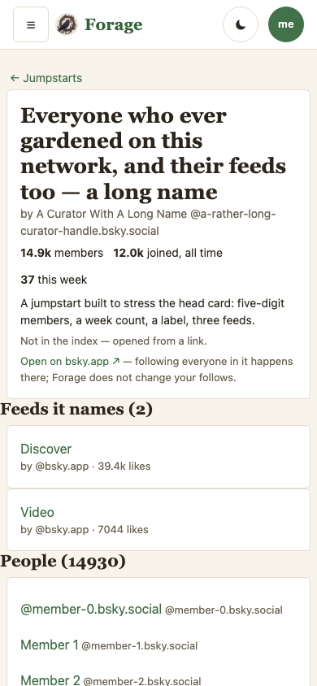
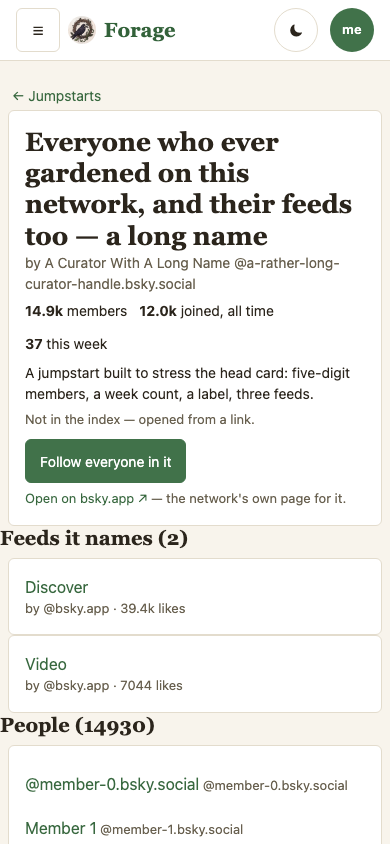
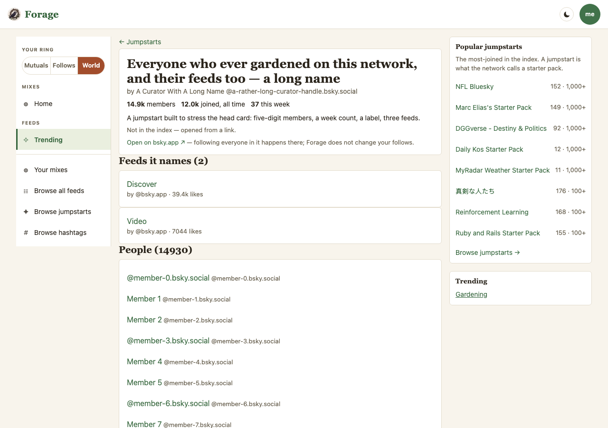
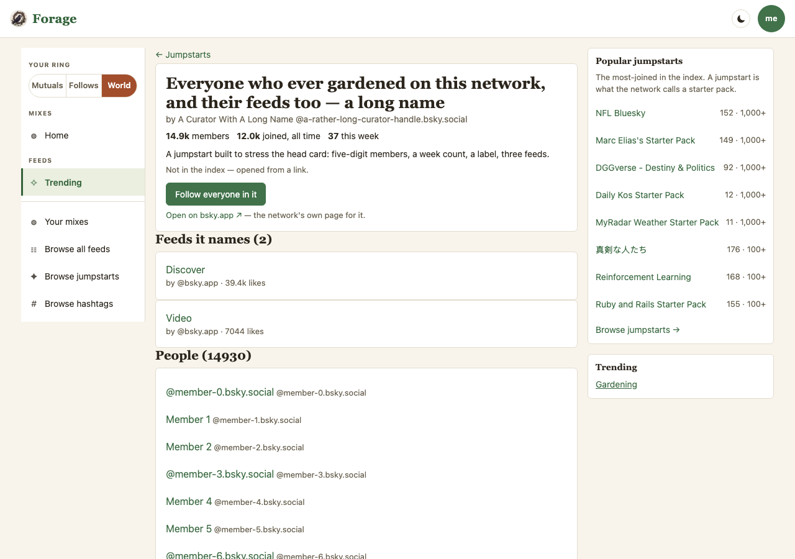
2 · The confirm page — /j/…/follow, signed in
Current: the route does not exist on main (the frame is its honest absence). Proposed: the heading with the number, the gloss once, the plan as a sentence — 144 records in batches of 50, already following 2, skipped 4 with each reason — the primary button with the number in it, and every one of the 150 members as a row at the 44px floor: the 144 to follow first, each with its own Follow; then the 2 followed, each with an Unfollow; then the 4 skipped, each saying why. Long names wrap.

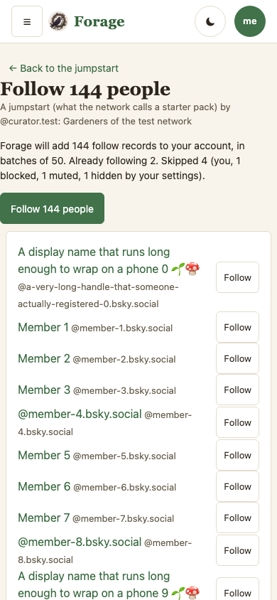
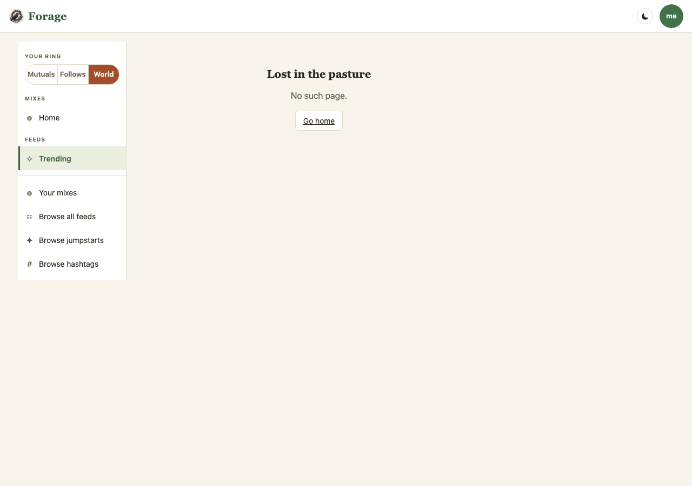
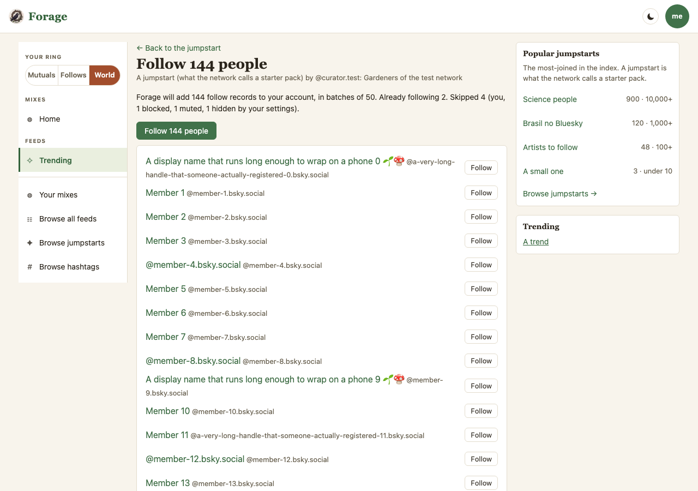
3 · After the button — the result
The same page after Follow 144 people was pressed: three applyWrites calls (50 + 50 + 44) answered by the live repo in the page. The heading now says Nobody left to follow, the big button is gone, the sentence says Followed 144 people., and every followed row carries its own Unfollow — flip any of them back — without a refetch; the sentence says how many she now follows on the list. (The failed-chunk state — Followed 50 of 144; the rest did not go through — HTTP 429 … with Try the rest — is held by the journey, not framed here.)
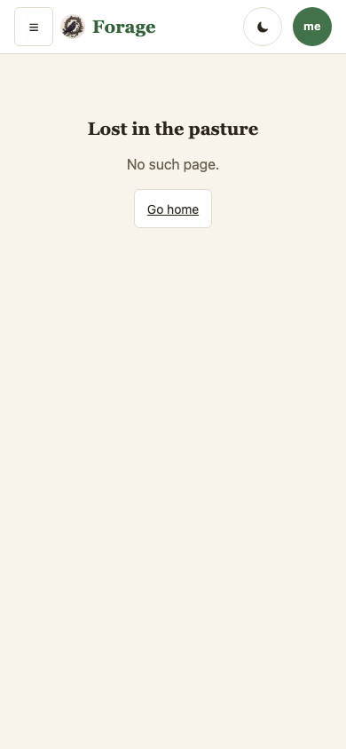
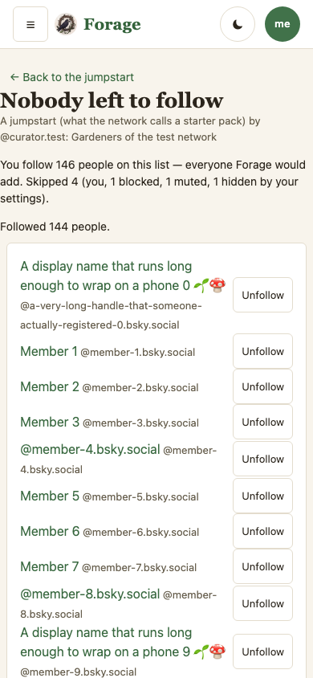

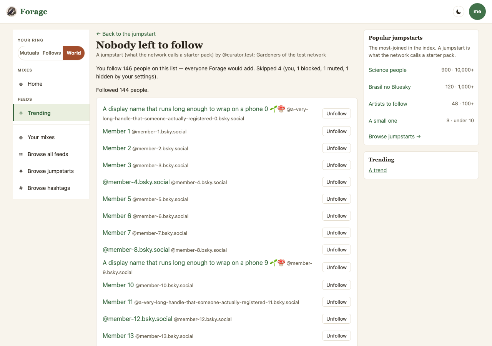
4 · The mirror — /j/…/unfollow
The list is the unit (owner, 2026-09-14): the two she follows — long before the jumpstart — come first, each with its own Unfollow; then the 144 she could follow, each with a Follow; then the skipped with their reason. The sentence counts the members on the list she does not follow. Same shape, same big button, same result and failed-chunk states.

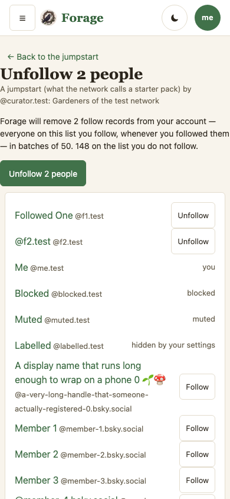

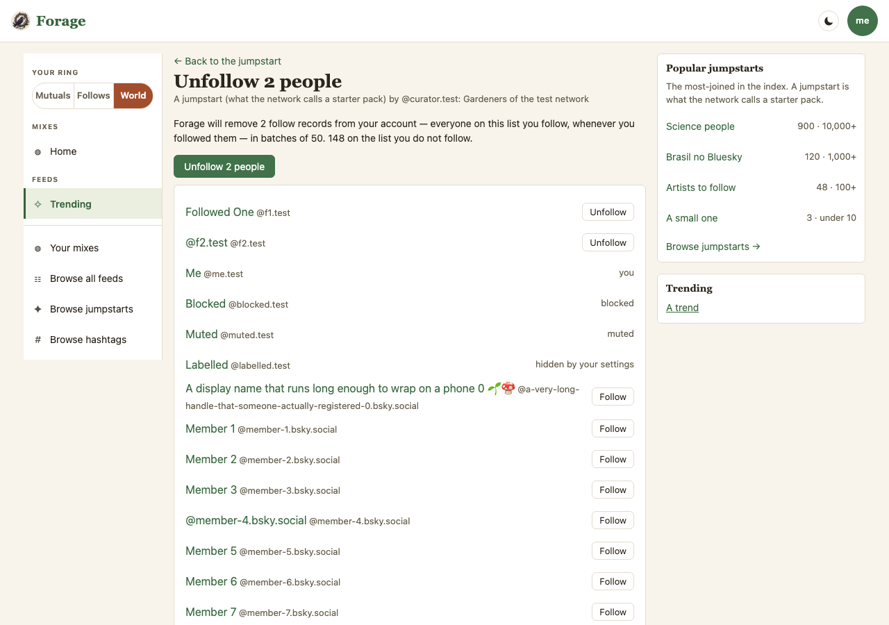
5 · Signed out — the door
A guest reads the same page: every member as a row with no buttons, and a sentence that says sign-in is the step and what Forage will do after it — everyone in it, or anyone in it. The button is the sign-in sheet. Nothing is written.
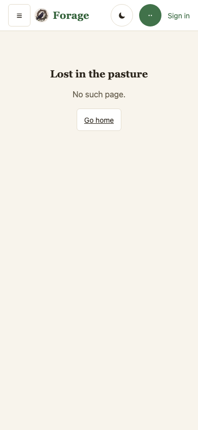
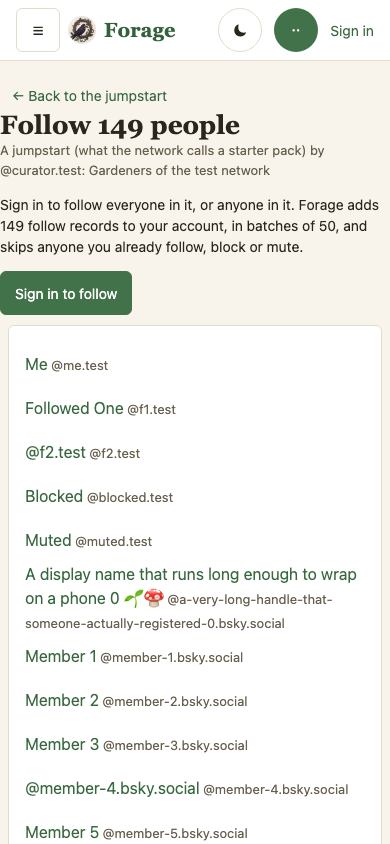
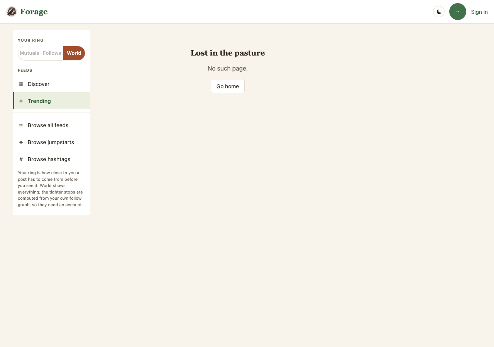
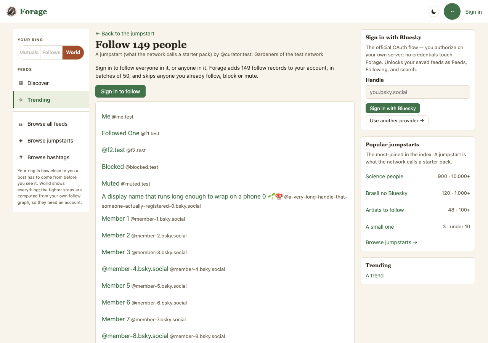
What the frames hold, and what they cannot
- The first Proposed capture of frame 3 read Followed 144 people.nullnull — two nulls stringified into the sentence by the result line's children. The journey's regex had matched anyway; it now pins the exact sentence, and the frame was re-captured after the fix. The frame is the check the claims had not written yet.
- v2: every member is a row (D6, decided on v1). The direction's targets come first; the skipped are greyed rows saying why. The per-row write is the same lens call as the bulk one, with one op, so a follow made one row at a time still carries
via. - The first v2 capture caught a second stringified null — at the head of every avatar-less row — and a done-state sentence promising to add 0 records. Both fixed, both now pinned by the journey, the frames re-captured.
- The Current frames for the three confirm routes are their absence on main. For the jumpstart page, Current is the head card as it shipped on 2026-09-09.
- Not framed: the failed-chunk state and Try the rest, the hidden-jumpstart and no-list empty states — all held by
e2e/follow-all.workflow.mjs. The live proof (e2e/follow-all-live.workflow.mjs,LIVE=1) ran green 2026-09-14 against the test account's own jumpstart: two records withviaread back from the PDS, then Unfollow all, then an empty read-back.